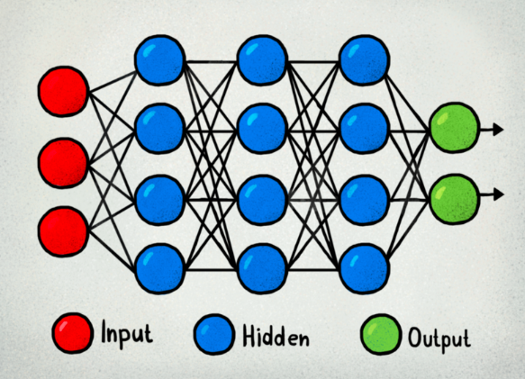
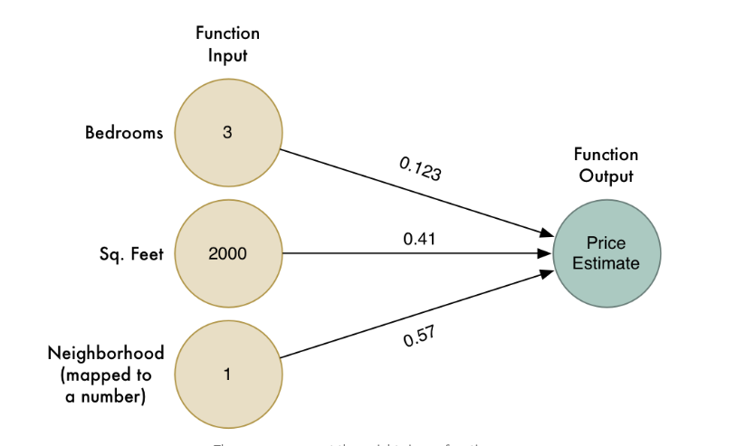

Crash Course: How Does Facial Recognition Work?
Facial Recognition is a subfield of Image Recognition and Computer Vision that relies on several steps in order to identify faces in images. So, how does this technology work?
In order to "recognize" a face in an input image, facial recognition technologies first have to identify where, if anywhere, faces are located in the image. If a face is found, the facial recognition system will re-orient the face to a pre-set standardized position. Afterwards, the system will create what's called a "faceprint" based on the results of inputting the face into a Convolutional Neural Network. This numerical "faceprint" will be a set of over 100 computer-determined numerical characteristics measured from each face that, similar to a fingerprint, uniquely defines it. These defining characteristics vary slightly over different algorithms, but normally consist of things like:
- Width of the nose
- Depth of eye sockets
- Shape of cheekbones
- Distance between eyes
Finally, this faceprint will be compared to a stored database of faceprints, and if it's close enough to any of them the system will output a match or probability of a match.
Now that we've gotten a general overview, you might be wondering what a Convolutional Neural Network (CNN) is? Let's take a look.
First, we should look more generally at neural networks. A neural network is designed to parallel the brain activity of living things; biological neural networks consist of synapses that react when "activated" by experiences/memories. Artificial neural networks mirror biological neurons through collections of connected nodes called neurons or "perceptrons".

The goal of a neural network is to estimate some output given several input characteristics. This input passes through layers of "neurons" designed to bring us to a more accurate result, and each "neuron" has a numerical weight that has some affect on the output. For example, if you were given the number of bedrooms, square feet, and neighborhood of an apartment in an attempt to estimate the price, one layer of a neural network might look like this:

An actual neural network would consist of passing the input through more layers until the final estimate was found, which would look something like the following.

So, now that we understand a little bit more about what a neural network looks like, let's come back to Convolutional Neural Networks. Convolutional Neural Networks differ from traditional neural networks in that they use a three dimensional structure where the neurons of one layer don't all connect to all the neurons of the next layer. Rather, each neuron analyzes a specific "feature" or subset of the image, which helps to determine the faceprint we referred to earlier.